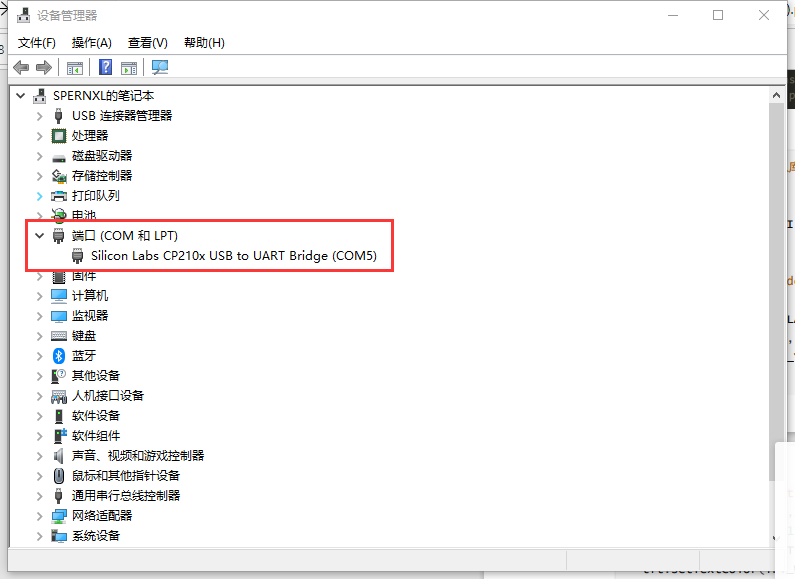

一.准备
1.材料
- Goouu-ESP32
- SPI TFT彩屏（8引脚）
2.ESP32硬件连接方式
- ESP32和TFT彩屏连接图
ESP32 TFT GND GND 3V3 VCC G18 SCL G23 SDA G26 RES G25 DC G27 CS 3.Arduino+ESP32开发环境搭建
官网下载Arduino https://www.arduino.cc/en/software (建议不要下载2.0 beta 版，可能会有问题，
如果官网太慢可以在这里下载Arduino中文社区 - Powered by Discuz!）
安装ESP32开发包，文件-> 首选项->附加开发板管理器 输入 https://dl.espressif.com/dl/package_esp32_index.json
然后重启Arduino，工具-> 开发板->开发板管理器，搜索ESP32下载
4.TFT_eSPI库的安装和使用
在 Arduino 中打开库管理器，搜索
TFT_eSPI，然后点击安装即可。转到 Arduino 库文件安装目录，打开 TFT_eSPI 库所在位置，以 Windows 系统为例，该库的安装目录一般为：
C:\Users<用户名>\Documents\Arduino\libraries\TFT_eSPI
如果是你使用的是绿色版 Arduino 的话，该库的安装目录一般为：
<Arduino安装目录>\Arduino\portable\sketchbook\libraries\TFT_eSPI
然后在库文件目录中打开 User_Setup.h 这个文件，根据自己的屏幕类型与驱动芯片类型进行相应的设置，这里以我使用的 2.4 寸 ST7735 TFT LCD 彩屏为例。
右键使用记事本或者其他编译软件打开
选择驱动ST7735，其他用不到的注释掉。
接着设置屏幕显示的颜色和屏幕的尺寸大小，我们设置屏幕的宽度为128×128，屏幕颜色有RGB和 BGR两种类型。TFT默认的是BGR类型，我们图片一般是RGB。
如果屏幕显示有偏移的话，可以取消这句注释
最后设置引脚（设置完引脚，后面的都可以不用动了）
二.显示
1.显示文字
将esp32与笔记本连接，如果连接成功会如下图所示
如果没有连接上可能是USB线没有数据传输功能
工具->开发板选择 ESP32的开发板，并且设置下载速度为921600，频率为80MHZ。
将你设备的端口打上勾
输入示例程序
1
2
3
4
5
6
7
8
9
10
11
12
13
14
15
16
17
18
19
TFT_eSPI tft = TFT_eSPI();
void setup() {
tft.init();
tft.fillScreen(TFT_BLACK); //屏幕颜色
tft.setCursor(10,10,1); //设置起始坐标(10, 10)，2 号字体
tft.setTextColor(TFT_WHITE); //设置字体颜色
tft.setTextSize(1); //设置文字的大小 (1~7)
tft.println("Hello World"); //打印文字
}
void loop() {
// put your main code here, to run repeatedly:
}点击烧写，在下方看到烧写完成100%。注意下方提示Connect 时，此时开发板需要手动按下 boot按钮才可烧写
烧录成功
效果如下

Goouu-ESP32
Author: Arno Dorian
Permalink: http://example.com/2022/08/10/Goouu-ESP32/
License: Copyright (c) 2019 CC-BY-NC-4.0 LICENSE
Slogan: Do you believe in DESTINY?